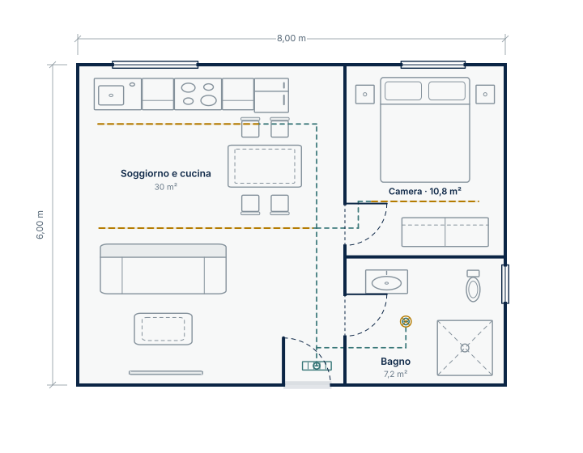
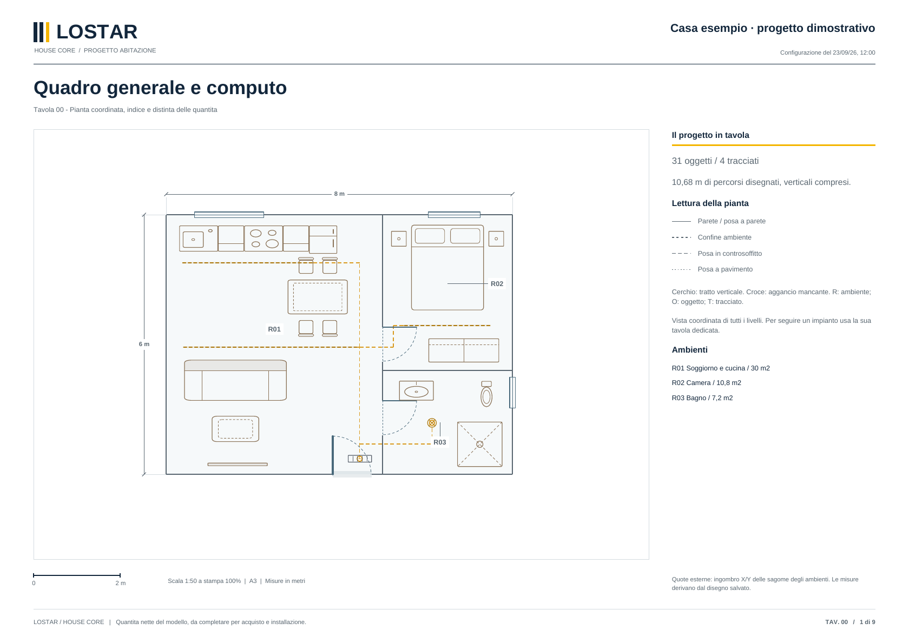

Sa com’è fatta
Ambienti, arredi, luci, percorsi e quadro elettrico convivono nella stessa pianta e nella vista 3D. Le relazioni tra apparecchio, presa, circuito e protezione sono quelle dichiarate nel progetto.
Un sistema operativo locale che tiene insieme stanze, impianti, dispositivi e memoria. L’assistente consulta ciò che hai modellato o collegato, ti spiega cosa succede e ti aiuta ad agire entro le regole che scegli.
L’assistente è già nell’anteprima scaricabile per la casa virtuale. Per conoscere e comandare una casa reale servono dispositivi compatibili e una configurazione dedicata.
 Scorri lo schema per vedere tutti i passaggi.
Scorri lo schema per vedere tutti i passaggi.
House Core costruisce un gemello digitale operativo: collega ogni elemento alla stanza, all’impianto e, quando presente, al dispositivo reale. La schermata principale è la casa, non un elenco di interruttori.
Ambienti, arredi, luci, percorsi e quadro elettrico convivono nella stessa pianta e nella vista 3D. Le relazioni tra apparecchio, presa, circuito e protezione sono quelle dichiarate nel progetto.
Quando colleghi dispositivi e misuratori compatibili, la casa mostra stati e misure disponibili: luci accese, consumi rilevati, eventi e cose da controllare. Un sensore assente non diventa un dato inventato.
Manutenzioni, scadenze e oggetti riposti restano legati al loro posto nella casa. Puoi chiedere cosa richiede attenzione o dove hai annotato di aver messo qualcosa.
L’assistente interroga il modello e lo stato disponibile. Può spiegare, proporre scene e regole, eseguire comandi consentiti e aiutarti a trovare informazioni che hai registrato. Nel sistema configurato, comandi semplici e automazioni non dipendono dal modello linguistico o da Internet.
Le decisioni delicate restano a te. L’assistente non sostituisce le protezioni dell’impianto né la verifica di un professionista.
Un possibile dialogo
«Che succede in casa?»
«Le luci del soggiorno risultano accese. Non ho una misura di temperatura per la camera. C’è una manutenzione registrata da controllare.»
Scarica l’anteprima gratuita per Windows o Mac. Disegna la casa, prova luci e scene, parla con l’assistente del modello virtuale ed esporta il progetto. Il download non cerca né comanda dispositivi reali.

Importa la pianta, definisci gli ambienti e disponi gli arredi. Passa dal disegno 2D alla vista 3D per leggere ingombri, spazi e relazioni.
Posiziona luci e strisce LED, sperimenta scene ed effetti nell’ambiente virtuale. Metti in relazione l’illuminazione con ciò che arreda la stanza.
Organizza i diversi livelli e disegna i tracciati. Quote e lunghezze, comprese le salite e le discese inserite, danno una base concreta al computo.
La chat è nell’anteprima: esplora il progetto e interagisce con luci, scene e tapparelle virtuali.
Per conversazioni più ampie configuri un modello AI. Se scegli un fornitore cloud, le domande e il contesto condiviso per rispondere passano a quel servizio.
Esporta tutta la casa o seleziona soltanto i layer che vuoi condividere. Un unico ZIP raccoglie i PDF, pronti per il confronto con Lostar e con chi seguirà i lavori.
Il progetto preparato in House Studio è la base per House Core: il sistema gira su un computer locale e può collegare al modello dispositivi compatibili. Per osservare e comandare l’impianto reale servono hardware, configurazione e una licenza valida. L’attivazione per i dispositivi reali si concorda con Lostar e non è compresa nell’anteprima gratuita.
Parliamo della tua casaQuadro e componenti di gestione scelti in funzione del progetto, delle utenze e delle compatibilità da verificare.
Indica dove si trova la casa e lo stato dei lavori. Valutiamo insieme l’intervento e il coordinamento con i professionisti che seguono il cantiere.
Disponibilità, sopralluogo, attività e tempi vengono concordati nel preventivo. I lavori elettrici sono affidati a personale qualificato.L’anteprima House Studio per Windows e macOS include il gemello virtuale, la chat, comandi semplici e risposte sullo stato simulato. Puoi registrare manutenzioni e oggetti da ricordare. Per conversazioni più ampie configuri un modello AI locale o un servizio esterno; quest’ultimo può richiedere credenziali e costi propri.
House Core · Edizione House Studio gratuitaHouse Studio in Applicazioni e aprilo con un doppio clic.Installa House Studio, scegli la cartella e premi Installa. Trovi House Studio sul Desktop e nel menu Start.Il pacchetto si apre con una piccola casa dimostrativa che puoi modificare o sostituire con la tua. Trovi le istruzioni complete, anche per la prima apertura di un’anteprima non firmata, nel file LEGGIMI dell’archivio.
Prepara i PDF del progetto e indica cosa vuoi realizzare. Scegli se richiedere la sola fornitura hardware o anche l’installazione.
House Core è il sistema operativo locale e il modello della casa, con assistente, stato, regole e memoria. House Studio è l’applicazione desktop gratuita che ti fa iniziare con una casa virtuale: comprende già l’assistente, ma non cerca né comanda i dispositivi reali senza la configurazione e la licenza necessarie.
Sì. Nell’anteprima puoi usare comandi semplici e porre domande sullo stato della casa virtuale anche senza configurare un modello linguistico. Per una conversazione più ricca puoi configurare un modello locale o un servizio AI esterno, che può richiedere credenziali e costi propri.
Con un modello AI locale configurato, la conversazione resta sulla macchina che lo esegue. Se scegli un fornitore cloud, le frasi e il contesto necessari per rispondere vengono inviati a quel fornitore. La scelta va fatta nelle impostazioni dell’assistente.
Conosce gli ambienti e le relazioni che hai inserito nel modello. Quando colleghi dispositivi e misuratori compatibili, mostra gli stati e le misure che questi forniscono. Può ricordare le informazioni che registri, come manutenzioni e oggetti riposti. Non inventa dati di sensori assenti e non ricostruisce da solo il cablaggio.
Sì. Scarichi l’anteprima e progetti la casa virtuale gratuitamente. Hardware e installazione sono servizi separati, da valutare su preventivo. Eventuali servizi AI esterni possono prevedere costi propri.
No. Il progetto nasce in virtuale. Puoi posizionare gli elementi e provare le interazioni senza controller o dispositivi fisici. Il collegamento all’impianto reale richiede hardware e compatibilità da verificare.
I PDF descrivono ciò che hai disegnato: spazi, elementi, percorsi e quantità nette. Sono una base utile al confronto e al computo, da completare e verificare con un professionista prima di acquisti e lavori, anche per carichi, sezioni, alimentazioni e sicurezza.
No. Esporti sul tuo computer solo i PDF che selezioni. Il modulo invia soltanto il riepilogo scritto da te; potrai condividere lo ZIP dopo che Lostar ti avrà ricontattato.
Sì. Puoi richiedere la sola fornitura e far seguire l’installazione ai professionisti del tuo cantiere. Se vuoi coinvolgere Lostar anche nell’installazione, indica località ed esigenze nella richiesta.
Inizia a conoscere la tua casa con House Studio.
Scarica l’anteprima gratuitaDalla pianta alla vita quotidiana: luci, assistente locale, costi e materiali raccontati attraverso House Core. Approfondisci anche le strisce LED a soffitto e i quadri elettrici.
Casa domotica: leggi la guida completa